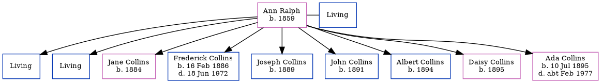

Ann Epps Collins (née Ralph) 1859 - [ Home ] | [ Calendar ] | [ Surnames Index ] | [ Family History ]Ann Ralph , the wife of William Collins (the first cousin three-times-removed on the father's side of Nigel Horne ), was born in Chislet, Kent, England in 18591,2,3 and married William (an agricultural labourer with whom she had 9 children: Charles John , Stephen William , Jane Lancaster , Frederick Alfred , Joseph , John , Albert , Daisy and Ada Mary , along with 2 surviving children) in Dover, Kent, England in 1879.
Throughout her life, Ann lived in several places: at Everden, Alkham, Kent on 3 Apr 18811 ; at Chalkshole Green, Alkham, Kent on 5 Apr 18912 ; and at Everden, Alkham, Kent on 31 Mar 19013 and on 2 Apr 19114 .
Children Jane Lancaster was born in 1884Frederick Alfred was born on 16 Feb 1886Joseph was born in 1889John was born in 1891Albert was born in 1894Daisy was born in 1895Ada Mary was born on 10 Jul 1895Citations 1881 England, Wales & Scotland Census - Findmypast (was age 22 and the wife of the head of the household) 1891 England, Wales & Scotland Census - Findmypast (was age 32 and the wife of the head of the household) 1901 England, Wales & Scotland Census - Findmypast (was age 42 and the wife of the head of the household) 1911 Census for England & Wales - Findmypast (was age 52 and the wife of the head of the household) Family Tree Map
Generated by ged2site . Last updated on Feb 19, 2025